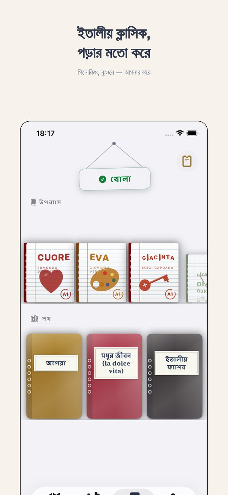
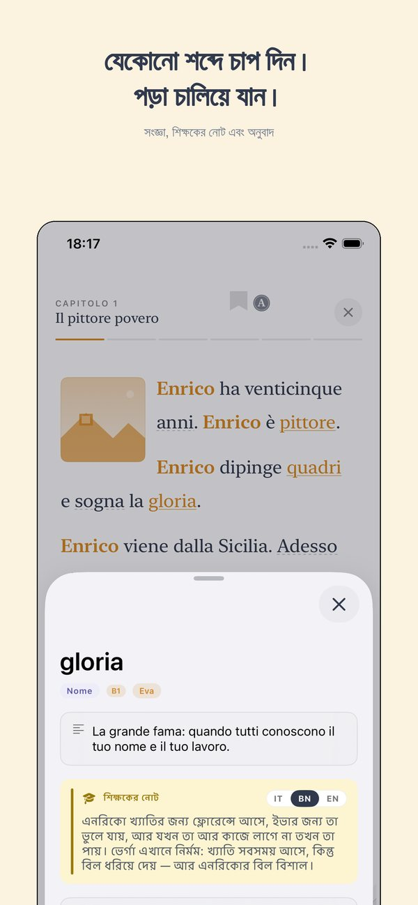
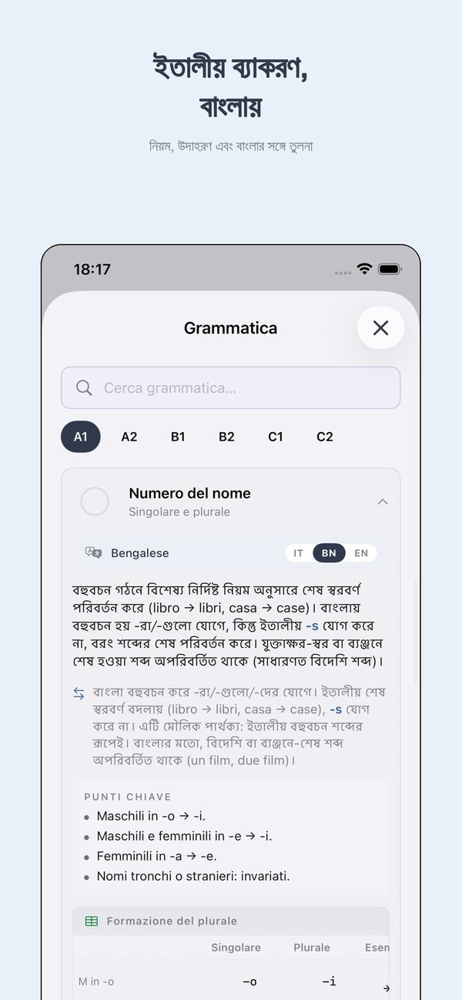
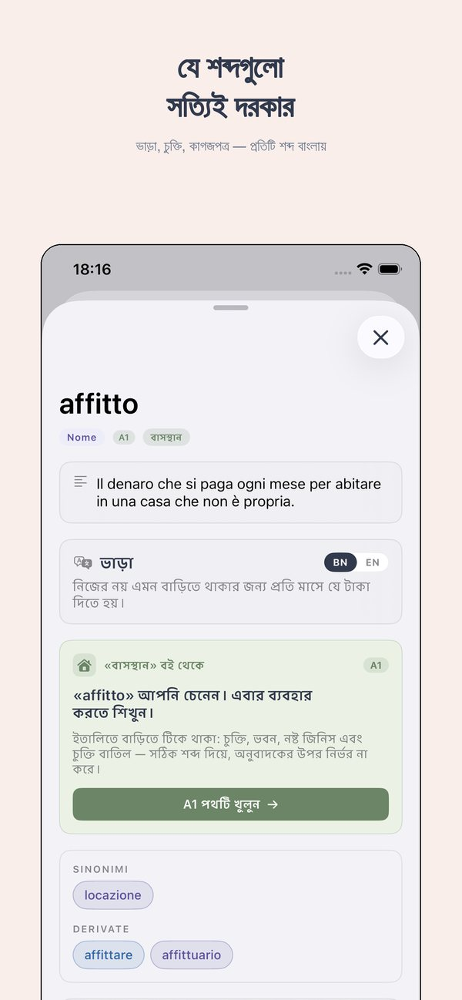
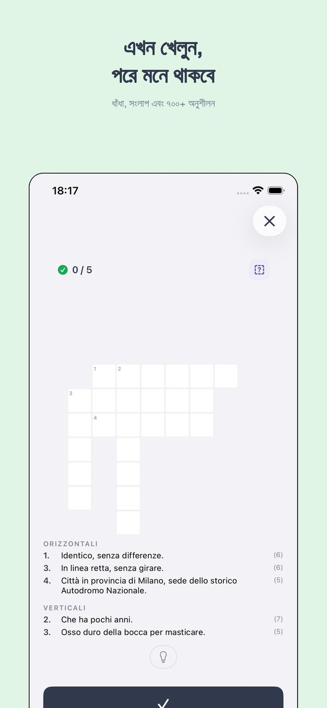

যাঁরা ইতালিতে থাকেন
বসবাসের নিবন্ধন ও পৌরসভার ইতালীয়
বসবাসের নিবন্ধন প্রায় সবকিছু খুলে দেয়: পারিবারিক ডাক্তার, স্কুল, ব্যাংক।
যে শব্দগুলো লাগবে
| la residenza | বসবাসের নিবন্ধন |
| l'anagrafe | জনসংখ্যা নিবন্ধন |
| il certificato di residenza | বসবাসের সনদ |
| il cambio di residenza | ঠিকানা পরিবর্তন |
| la carta d'identita' | পরিচয়পত্র |
| lo stato di famiglia | পারিবারিক অবস্থা |
| l'autocertificazione | স্বঘোষণা |
| l'ufficio anagrafe | নিবন্ধন দপ্তর |
| la marca da bollo | রাজস্ব স্ট্যাম্প |
| il domicilio | আবাসস্থল |
যেভাবে আছে সেভাবেই ব্যবহারের বাক্য
- Vorrei fare la residenza.
- Quali documenti devo portare?
- Quanto tempo ci vuole?
- Devo prendere un appuntamento?
মনে রাখবেন
আবেদনের পর পৌর পুলিশ ঠিকানায় যাচাই করতে আসে। এটা স্বাভাবিক।
Ti






Thuis Italiaans থেকে আরও
স্তর অনুযায়ী বই · অনলাইনে ইতালীয় ভাষার পাঠ · ৭০০+ বিনামূল্যে অনুশীলন